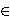

Q = ( (ad + 1)(bc + 1),
 (ab + 1)(ac + 1)
(ad + 1)(bc + 1)(bd + 1)(cd + 1) ).
(ab + 1)(ac + 1)
(ad + 1)(bc + 1)(bd + 1)(cd + 1) ).
ab + 1 = r2, ac + 1 = s2, bc + 1 = t2.
In order to extend this triple to a quadruple, we have to solve the system
| (6.1) |
It is natural idea to assign to this system the elliptic curve
| (6.2) |
There are three rational points on E of order 2:
A = (-1/a, 0), B = (-1/b, 0), C = (-1/c, 0),
and also obvious rational pointsP = (0, 1), S = (1/abc, rst/abc).
It is not so obvious, but it is easy to verify that S = 2R, whereR = ((rs + rt + st + 1) / abc, (r + s)(r + t)(s + t) / abc).
It is clear that every rational solution of the original system (6.1) induce a rational point on E. The question is which rational points on E induce a rational solution of (6.1). The answer is given in the following theorem (see [97] and [37, Anwendung 1]).
|
Theorem 6.1: The x-coordinate of the point
T 
E(Q) satisfies
(6.1) if and only if |
By Theorem 6.1 and the relation
x(P + S) = d_, x(P - S) = d+,
where d_ and d+ are defined in Chapter 2.The addition and subtraction of the point S has another interesting property (see [62, 97]):
|
Theorem 6.2: If x-coordinate of the point
T
E(Q) satisfies
(6.1), then for the points
|
|
Corollary 6.1: Every Diophantine quadruple
|
In [62], it was shown that if the number e in Corollary 6.1
is obtained by construction from Theorem 6.2, then
The next question is what can be said about torsion group and rank
of E. In [97], it was proved that
if a, b, c are positive integers, then
In general, we may expect that the points P and S
are two independent points of infinite orders, and therefore that
E : y2 = (ax + 1)(bx + 1)(cx + 1)
We have always the following integer points:(0, ±1), (d+, ±(at + rs)(bs + rt) (cr + st)), (d_, ±(at - rs)(bs - rt)(cr - st)),
and also (-1,0) if 1 {a, b, c}. For some families of Diophantine triples it is possible to prove that there are no other integer points on E. This was proved in [89] for elliptic curvesEk: y2 = ((k - 1)x + 1) ((k + 1)x + 1)(4kx + 1),
under assumption thatAnalogous result was proved in [97] for the family
y2 = (F2kx + 1) (F2k+2x + 1) (F2k+4x + 1)
under assumption that rank is equal to 1.In [91], Dujella & Pethoe considered the family
Ck: y2=(x + 1)(3x + 1) (ckx + 1),
where the sequence (ck) is given byc1 = 8, c2 = 120, ck+2 = 14ck+1 - ck + 8,
i.e. {1, 3, ck} is a Diophantine triple. They proved that ifx {-1, 0, ck-1, ck+1}.
Jacobson & Williams [112] showed that the same result is unconditionally true for all
In [81], Herrmann, Pethoe & Zimmer
computed all S-integral points on some elliptic curves
associated with the D(256)-quintuple
In the proof, they considered the elliptic curve E' given by
E' : y2 = x3 - 9494304273243x + 11224300076670688758.
This curve has rank 4 and possesses an exceptionally large number of integral points. Namely,B(T) = sup { rank (E (Q)) : torsion group of E is T }.
The conjecture is that B(T) is unbounded for all T.
In [87], an example was constructed
which shows that
The construction starts with a rational Diophantine triple {a, b, c}. Assume that d+d_ + 1 is a perfect square. Then we my expect that the elliptic curve
y2 = (bx + 1)(d+x + 1)(d_x + 1)
has at least four independent points of infinite order, namely, points with x-coordinates0, a, c, 1 / (bd+d_).
In [87], one-parametric solution of the equation d+d_ + 1 = w2 was found. In that way, an elliptic curve over Q(t) with rankThis result was improved in [90] using different construction. Let {a, b, c, d} be a rational Diophantine quadruple. We may assign to this quadruple the elliptic curve
y2 = (ax + 1)(bx + 1)(cx + 1)(dx + 1).
By the substitutiont = y(d - a)(d - b)(d - c) / (dx + 1)2, s = (ax + 1)(d - b)(d - c) / (dx + 1),
we obtain the following elliptic curveE*: t2 = s(s + (b - a)(d - c))(s + (c - a)(d - b)).
We have three non-trivial rational 2-torsion points on E*, and another two obvious rational points:
P = ( (b - a)(c - a),
(b - a)(c - a)(d - a) ),
Q = ( (ad + 1)(bc + 1),
(ab + 1)(ac + 1)
(ad + 1)(bc + 1)(bd + 1)(cd + 1) ).
(de + 1)(b - a)(c - a) / (ae + 1).
The following characterizations of the notions of regular Diophantine quadruples and quintuples are given in [90]:
The rational Diophantine quadruple{a, b, c, d} is regular iff2P = ± Q;
The rational Diophantine quintuple{a, b, c, d, e} is regular iffR ± P = ± Q.
These characterizations suggest that if an irregular
rational Diophantine quadruple
{17 / 448, 2145 / 448, 23460 / 7, 2352 / 7921},
{32 / 91, 60 / 91, 1878240 / 1324801, 15345900 / 12215287},
{252 / 115, 559 / 1380, 24264935 / 2979076, 16454108 / 1703535},
{81 / 1400, 2875 / 168, 4928 / 3, 5696 / 4725},
{805 / 1404, 1105 / 108, 21280 / 351, 41067 / 128164},
{12 / 119, 620 / 357, 39984 / 18769, 1125176416 / 1493609907},
{559 / 1380, 252 / 115, 24364935 / 2979076, 16454108 / 1703535}.
Let us mention that these results were improved, with different methods, by Kulesz & Stahlke and Dujella & Kulesz. They found several examples of elliptic curves with torsion groupIt is possible to construct rational Diophantine triples {a, b, c} such that the elliptic curve
y2 = (ax + 1)(bx + 1)(cx + 1)
has larger torsion group and relatively high rank. Let us mention three examples (see [149]):{-22552 / 5129, 5129 / 22552, -52463190 / 14458651},
{39123 / 96976, 12947200 / 418209, 42427 / 1104},
{145 / 408, -408 / 145, -145439 / 59160},
which show thatFurthermore, the triples
{1270 / 2323, 5916 / 2323, 664593861324 / 12535672267},
{3164 / 491, 10692 / 491, 302996685420 / 118370771}
induce the elliptic curves with the torsion group{1235 / 69, 5146848 / 69277, 91544915 / 19120452}
gives a curve with rank equal to 10, while the triple{795025 / 3128544, -22247424 / 7791245, 24807390285149 / 97501011189120}
gives a curve with rank equal to 11 (Aguirre, Dujella & Peral [209]).Dujella & Peral found the triple
{301273 / 556614, -556614 / 301273, -535707232 / 290125899}
which induces the elliptic curve with the torsion groupThe information about current records for all torsion groups may be found in this table.
1. Introduction
2. Diophantine quintuple conjecture
3. Sets with the property D(n)
4. Connections with Fibonacci numbers
5. Rational Diophantine m-tuples
7. Various generalizations
8. References
| Diophantine m-tuples page | Andrej Dujella home page |